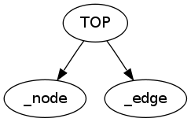

Reference
This module produces the call tree between chunks of a template.
It is useful to find orphan chunk.
Functions
CodeGen.Graph.to_dot( tmpl )
Returns a string in DOT format.
Examples
$ lua -l CodeGen.Graph -e "print(CodeGen.Graph.to_dot(CodeGen.Graph.template))" > graph.dot $ dot -T png -o graph.png graph.dot
$ cat graph.dot
digraph {
node [ shape = none ];
_node;
TOP;
_edge;
TOP -> _node;
TOP -> _edge;
}
graph.png